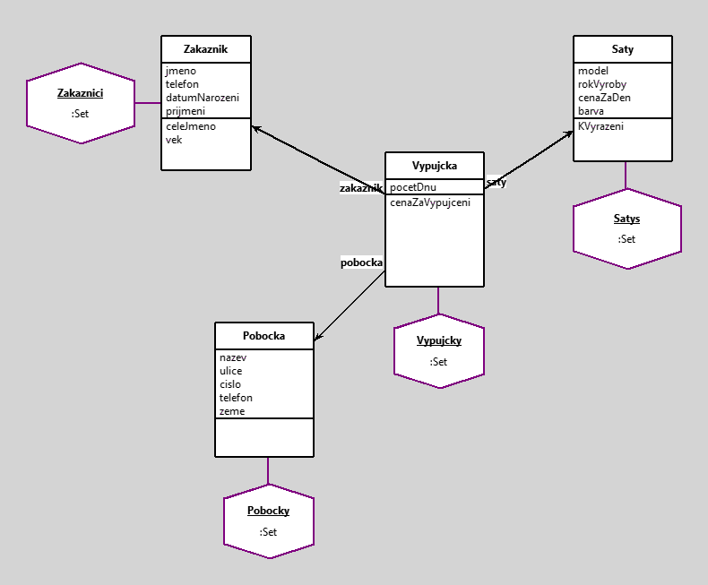

pujcovna Saty
author(s): Zubovich Arina
Pujcovna saty je jednoduchy navrh objektoveho modelu, ktery v sobe drzi zaznamy o pujckach satu, jakemu zakaznikovi a z jake pobocky.
Cilem projektu je definovat vztah mezi zakaznikem, zapujcenym satem, mistem zapujceni a dobou zapujceni.
Pomoci metod ziskavame celkovou cenu za pujceni.
Definovany nasledujici tridy:
Saty
Pobocka
Vypujcka
Zakaznik
Ve tridach jsou definovany nasledujici promenne:
Zakaznik:
- Jmeno (string)
- Prijmeni (string)
- Telefon (string)
- Datum narozeni (date)
aty:
- Model (string)
- Velikost(date)
- Barva(string)
- Cena za den (number)
Pobocka:
- Nazev (string)
- Ulice (string)
- Cislo (number)
- Telefon (string)
Vypujcka:
- Pocet dnu (string)
- Zakaznik (object)
- aty(object)
- Pobocka (object)
V modelu jsou pouzity metody:
ve tride Zakaznik pro zobrazeni celeho jmena a veku,
ve tride Saty pro zjisteni saty k vyrazeni (stari vice nez 18 let),
ve tride Vypujcka metoda na zjisteni ceny za vypujceni saty(cena saty za den * pocet dnu).
Pravidla:
1)Zakaznikum musi byt vice nez 18 let.
2)Ulice musi mit cislo domu.
3) Saty musi byt vyrobleny v 2015 roce nebo vice
4)Vypujcka je mozna jenom na vice 2 dnu
Dotazy:
1) Vyberte kde cenaCelkem bude se >10000
2) Vypsat zakazniki ktere pujcili ne v cesku
3) vyberte kde zakazniku > 20 let
4)Vyberte pobocky ktere se nachazi v Cesku
5)Vypiste vsechni zakazniky ktere pujcili zlute sate
6)Vypeste co pucil konkretni zakaznik- Arina Zubovich
Workspace
1)Dotaz: Vyberte kde cenaCelkem bude se >10000
Vypujcky select: [:a | a cenaZaVypujceni> 10000]
2) Vypsat zakazniki ktere pujcili ne v cesku
Pobocky select:[: a | a zeme~= 'Cesko']
3)Dotaz: vyberte kde zakazniku > 20 let
(Zakaznici select: [:a | a vek > 20])
4)Dotaz:Vyberte pobocky ktere se nachazi v Cesku
Pobocky select:[: a | a zeme= 'Cesko']
5)Dotaz:Vypiste vsechni zakazniky ktere pujcili zlute sate
((Vypujcky select: [:a | a saty barva= 'zluta']) >> [:b | b zakaznik])
6)Dotaz:Vypeste co vypucil konkretni zakaznik- Arina Zubovich
Vypujcky select: [:x | x zakaznik jmeno = 'Arina' ]
Pravidla:
1)Zakaznikum musi byt vice nez 18 let.
(Zakaznici select: [:z | z vek <18]) isEmpty
2)Ulice musi mit cislo domu.
(Pobocky select: [:z| z cislo = '0'])isEmpty
3) Saty musi byt vyrobleny v 2015 roce nebo vice
(Satys select: [:z| z rokVyroby <= '2015' asNumber])isEmpty
4)Vypujcka je mozna jenom na vice 2 dnu
(Vypujcky select: [:z| z pocetDnu < '2' asNumber])isEmpty
Workspace Objects
-
Pobocky :Set
-
Satys :Set
-
Vypujcky :Set
-
Zakaznici :Set
Script
"Note that variables begining with uppercase letter will be moved into the workspace pool."
Zakaznici := Set new.
z1 := Zakaznik new.
z1 jmeno: 'Karolina'.
z1 prijmeni: 'Svetla'.
z1 telefon: '65789383'.
z1 datumNarozeni: '7 10 1970' asDate.
z2 := Zakaznik new.
z2 jmeno: 'Tanya'.
z2 prijmeni: 'Marchenko'.
z2 telefon: '123456785'.
z2 datumNarozeni: '1 6 1989' asDate.
z3 := Zakaznik new.
z3 jmeno: 'Arina'.
z3 prijmeni: 'Zubovich'.
z3 telefon: '987654321'.
z3 datumNarozeni: '8 9 1969' asDate.
z4 := Zakaznik new.
z4 jmeno: 'Darya'.
z4 prijmeni: 'Nevelya'.
z4 telefon: '657484001'.
z4 datumNarozeni: '4 7 1992' asDate.
z5 := Zakaznik new.
z5 jmeno: 'Martina'.
z5 prijmeni: 'Kralova'.
z5 telefon: '111353374'.
z5 datumNarozeni: '9 8 1999' asDate.
Zakaznici add: z1; add: z2; add: z3; add: z4; add: z5.
Satys := Set new.
a1 := Saty new.
a1 model: 'Mango'.
a1 rokVyroby: 2019.
a1 barva: 'zluta'.
a1 cenaZaDen: 3000.
a2 := Saty new.
a2 model: 'Guess'.
a2 rokVyroby: 2018.
a2 barva: 'cervena'.
a2 cenaZaDen: 7000.
a3 := Saty new.
a3 model: 'Zara'.
a3 rokVyroby: 2015.
a3 barva: 'stribrna'.
a3 cenaZaDen: 4800.
a4 :=Saty new.
a4 model: 'Marks Spenser'.
a4 rokVyroby: 2018.
a4 barva: 'hneda'.
a4 cenaZaDen: 5500.
a5 := Saty new.
a5 model: 'Orsay'.
a5 rokVyroby: 2019.
a5 barva: ' bila'.
a5 cenaZaDen: 7000.
Satys add: a1; add: a2;add: a3; add: a4; add: a5.
Pobocky := Set new.
p1 := Pobocka new.
p1 zeme:'Cesko'.
p1 nazev: 'Praha'.
p1 ulice: 'Korunovacni'.
p1 cislo: 1.
p1 telefon: '115544770'.
p2 := Pobocka new.
p2 zeme:'Slovensko'.
p2 nazev: 'Bratislava'.
p2 ulice: 'Svobody'.
p2 cislo: 7.
p2 telefon: '44876528'.
p3 := Pobocka new.
p3 zeme:'Cesko'.
p3 nazev: 'Praha-Suchdol'.
p3 ulice: 'Kamycka'.
p3 cislo: 105.
p3 telefon: '224566687924'.
p4 := Pobocka new.
p4 zeme:'Madjarsko'.
p4 nazev: 'Budapest'.
p4 ulice: 'Central'.
p4 cislo: 87.
p4 telefon: '68974565'.
p5 := Pobocka new.
p5 zeme:'Rakousko'.
p5 nazev: 'Viden'.
p5 ulice: 'Slepa'.
p5 cislo: 97.
p5 telefon: '999765056'.
Pobocky add: p1; add: p2; add: p3; add: p4; add: p5.
Vypujcky := Set new.
v1 := Vypujcka new.
v1 zakaznik: z1.
v1 saty: a1.
v1 pocetDnu: 5.
v1 pobocka: p1.
v2 := Vypujcka new.
v2 zakaznik: z2.
v2 saty: a2.
v2 pocetDnu: 10.
v2 pobocka: p1.
v3 := Vypujcka new.
v3 zakaznik: z5.
v3 saty: a5.
v3 pocetDnu: 15.
v3 pobocka: p1.
v4 := Vypujcka new.
v4 zakaznik: z3.
v4 saty: a3.
v4 pocetDnu: 2.
v4 pobocka: p5.
v5 := Vypujcka new.
v5 zakaznik: z4.
v5 saty: a1.
v5 pocetDnu: 14.
v5 pobocka: p3.
Vypujcky add: v1; add: v2; add: v3; add: v4; add: v5.
Diagram

Classes
Zakaznik
|
instance variables
datumNarozeni :Date
jmeno :String
prijmeni :String
telefon :String
|
methods
celeJmeno
datumNarozeni
datumNarozeni:
initialize
jmeno
jmeno:
prijmeni
prijmeni:
telefon
telefon:
vek
|
|
|
code of non-accessing methods:
-
celeJmeno
^self jmeno , ' ' , self prijmeni
-
initialize
"generated by Daskalos"
super initialize.
jmeno := nil.
telefon := nil.
datumNarozeni := nil.
prijmeni := nil.
-
vek
^((Date today subtractDate: datumNarozeni) / 365.2422) truncated
Vypujcka
|
instance variables
pobocka :Object
pocetDnu :Number
saty :Object
zakaznik :Object
|
methods
cenaZaVypujceni
initialize
pobocka
pobocka:
pocetDnu
pocetDnu:
saty
saty:
zakaznik
zakaznik:
|
|
|
code of non-accessing methods:
Saty
|
instance variables
barva :String
cenaZaDen :Number
model :String
rokVyroby :Number
|
methods
barva
barva:
cenaZaDen
cenaZaDen:
initialize
KVyrazeni
model
model:
rokVyroby
rokVyroby:
|
|
|
code of non-accessing methods:
Pobocka
|
instance variables
cislo :Number
nazev :String
telefon :String
ulice :String
zeme :String
|
methods
cislo
cislo:
initialize
nazev
nazev:
telefon
telefon:
ulice
ulice:
zeme
zeme:
|
|
|
code of non-accessing methods:
Links
Data file and
class source.
Generated by Daskalos - Object Modeling Tutor (C) 2006 V. Merunka
6 травня 2019 р.